CODING AGENTS AS PIXEL WORLD MODELS
traex/GPT-6.1-Sol · 0152
点击播放 · 原生 RGB 像素
逐轮保存的候选
回放视频、检查图与代码变化。
每份候选均可单独播放。实际图片检查记录在下方工具轨迹中。
候选 01播放与检查图
点击播放 · 原生 RGB 像素

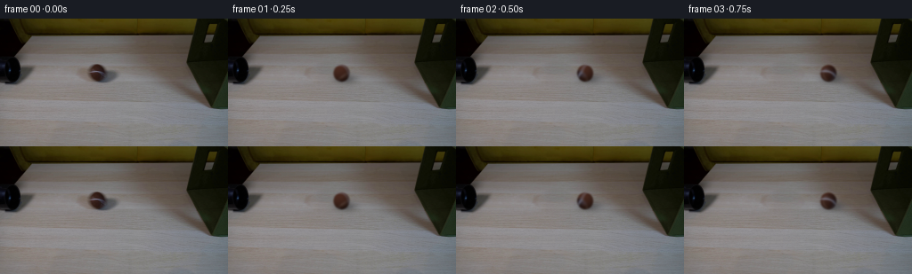
展开代码变化
--- 上一保存版本
+++ 本次保存版本
@@ -0,0 +1,123 @@
+from pathlib import Path
+import numpy as np
+import cv2
+from PIL import Image
+from scipy.ndimage import gaussian_filter, map_coordinates
+import artifact_io
+
+ROOT=Path(__file__).resolve().parent
+im=np.asarray(Image.open(ROOT/'first_frame.png').convert('RGB')).astype(np.float32)
+H,W=im.shape[:2]
+y,x=np.mgrid[:H,:W].astype(np.float32)
+
+# Reconstruct the small occluded patch of wood with locally matched grain.
+r=np.sqrt(((x-112)/25.0)**2+((y-62.0)/16.0)**2)
+hole=(r<1).astype(np.uint8)*255
+smooth=cv2.GaussianBlur(im,(0,0),2)
+low=cv2.inpaint(smooth.astype(np.uint8),hole,5,cv2.INPAINT_NS).astype(np.float32)
+donor=np.roll(im,-46,axis=1)
+fine=donor-cv2.GaussianBlur(donor,(0,0),2)
+repaired=low+fine
+blend=np.clip((1-r)*5,0,1)[...,None]
+bg=im*(1-blend)+repaired*blend
+
+cx0,cy0=109.2,61.1
+rx,ry=9.05,9.45
+# Recover photographed fuzz and colour, excluding the light stitch.
+stripe=((im[:,:,2]>im[:,:,0]*.96)&(im[:,:,0]>73)&(x>98)&(x<120)&(y>56)&(y<67))
+base=cv2.inpaint(im.astype(np.uint8),stripe.astype(np.uint8)*255,2,cv2.INPAINT_NS).astype(np.float32)
+
+S=4
+sz=34*S
+v,u=np.mgrid[:sz,:sz].astype(np.float32)
+u=(u+.5)/S-17
+v=(v+.5)/S-17
+nx=u/rx;ny=-v/ry
+rho=nx*nx+ny*ny
+nz=np.sqrt(np.maximum(0,1-rho))
+normal=np.stack([nx,ny,nz],axis=-1)
+inside=rho<1
+# Broad, diffuse lighting as in the original photographed ball.
+def light(norm):
+ nxx,nyy,nzz=norm[...,0],norm[...,1],norm[...,2]
+ return np.clip(.63+.24*(-.4*nxx+.60*nyy+.69*nzz)+.10*nyy,.35,1.1)
+L=light(normal)
+coords=np.array([cy0-ry*ny,cx0+rx*nx])
+front=np.stack([map_coordinates(base[:,:,c],coords,order=1,mode='nearest') for c in range(3)],axis=-1)
+reflectance=front/np.maximum(L[...,None],.1)
+# The concealed surface has the same woolly brown material.
+axis=np.array([0,.74,-.6726]); axis/=np.linalg.norm(axis)
+
+def sphere(angle):
+ ca,sa=np.cos(angle),np.sin(angle)
+ # Back-rotate visible normals into material coordinates.
+ nn=normal*ca-np.cross(axis,normal)*sa+np.sum(normal*axis,axis=-1)[...,None]*axis*(1-ca)
+ tx,ty,tz=nn[...,0],nn[...,1],nn[...,2]
+ q=np.array([cy0-ry*ty,cx0+rx*tx])
+ photo=np.stack([map_coordinates(base[:,:,c],q,order=1,mode='nearest') for c in range(3)],axis=-1)
+ oldlight=light(nn)
+ refl=photo/oldlight[...,None]
+ # Fine, non-repeating fibre variations, fixed on the surface.
+ grit=(np.sin(tx*58+ty*17+tz*31)+.55*np.sin(tx*113-ty*67+tz*57))*.85
+ hidden=np.stack([78+grit,44+grit*.6,33+grit*.4],axis=-1)
+ w=np.clip((tz-.32)/.24,0,1)[...,None]
+ refl=refl*w+hidden*(1-w)
+ color=refl*L[...,None]
+ # A continuous rounded tennis-ball seam rotates with the material.
+ f=ty-.14*tz+.22*tx*tz+.38*tx*tx*tz
+ seam=np.exp(-.5*(f/.063)**2)*.91
+ seamcolor=np.stack([147*L,148*L,165*L],axis=-1)
+ color=color*(1-seam[...,None])+seamcolor*seam[...,None]
+ alpha=inside.astype(np.float32)
+ # Match the optical defocus of the supplied photograph.
+ a=gaussian_filter(alpha,.61*S)
+ prem=np.stack([gaussian_filter(color[:,:,c]*alpha,.61*S) for c in range(3)],axis=-1)
+ return prem,a
+
+impact_t=1.42
+impact_x=206.25
+speed0=(impact_x-cx0)/impact_t+2.5*impact_t
+impact_speed=speed0-5*impact_t
+rebound_v=impact_speed*.245
+drag=7.8
+
+def position(t):
+ if t<=impact_t:
+ return cx0+speed0*t-2.5*t*t,cy0
+ dt=min(t-impact_t,rebound_v/drag)
+ return impact_x-rebound_v*dt+.5*drag*dt*dt,cy0+.12*dt
+
+# All elements other than the ball remain anchored to the fixed camera.
+def draw(t):
+ px,py=position(t)
+ frame=bg.copy()
+ # Contact shadow, elongated toward the right in the tabletop light.
+ shadow=np.exp(-.5*(((x-px-5.7)/8.9)**2+((y-py-6.0)/3.9)**2))*.30
+ shadow+=np.exp(-.5*(((x-px-1)/5.5)**2+((y-py-8)/1.5)**2))*.11
+ # The shadow never paints over the vertical fabric side.
+ table=(x<210+.538*(y-49)) | (y>101)
+ shadow=shadow*table
+ frame*=1-shadow[...,None]
+ theta=(px-cx0)/(rx*.87)
+ ball,alpha=sphere(theta)
+ # Convert the supersampled optical image to the native sampling grid.
+ ball=cv2.resize(ball,(34,34),interpolation=cv2.INTER_AREA)
+ alpha=cv2.resize(alpha,(34,34),interpolation=cv2.INTER_AREA)
+ M=np.array([[1,0,px-16.5],[0,1,py-16.5]],np.float32)
+ a=cv2.warpAffine(alpha,M,(W,H),flags=cv2.INTER_LINEAR,borderMode=cv2.BORDER_CONSTANT)
+ p=cv2.warpAffine(ball,M,(W,H),flags=cv2.INTER_LINEAR,borderMode=cv2.BORDER_CONSTANT)
+ # Occlusion on the fabric plane (principally the soft outer optical fringe).
+ occlude=((x>=210+.538*(y-49))&(y>=0)&(y<=100)).astype(np.float32)
+ a*=1-occlude
+ p*=1-occlude[...,None]
+ return frame*(1-a[...,None])+p
+
+frames=[im.astype(np.uint8)]
+for i in range(1,20):
+ t=i/4
+ # Modest short-shutter motion integration, not slow motion.
+ exposures=[draw(t+s) for s in (-.010,0,.010)]
+ frames.append(np.clip(np.mean(exposures,axis=0),0,255).astype(np.uint8))
+frames=np.stack(frames)
+artifact_io.save(frames,ROOT)
+Image.fromarray(np.rint(bg).clip(0,255).astype(np.uint8)).save(ROOT/'.tmp/background.png')
候选 02播放与检查图
点击播放 · 原生 RGB 像素
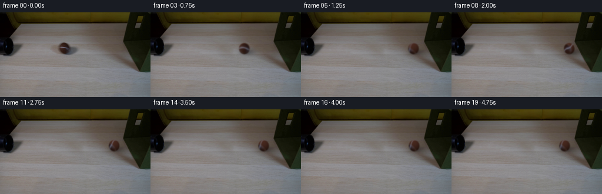
展开代码变化
--- 上一保存版本
+++ 本次保存版本
@@ -11,15 +11,10 @@
y,x=np.mgrid[:H,:W].astype(np.float32)
# Reconstruct the small occluded patch of wood with locally matched grain.
-r=np.sqrt(((x-112)/25.0)**2+((y-62.0)/16.0)**2)
+r=np.sqrt(((x-112)/32.0)**2+((y-62.0)/21.0)**2)
hole=(r<1).astype(np.uint8)*255
-smooth=cv2.GaussianBlur(im,(0,0),2)
-low=cv2.inpaint(smooth.astype(np.uint8),hole,5,cv2.INPAINT_NS).astype(np.float32)
-donor=np.roll(im,-46,axis=1)
-fine=donor-cv2.GaussianBlur(donor,(0,0),2)
-repaired=low+fine
-blend=np.clip((1-r)*5,0,1)[...,None]
-bg=im*(1-blend)+repaired*blend
+donor=np.roll(im,-58,axis=1).astype(np.uint8)
+bg=cv2.seamlessClone(donor, im.astype(np.uint8), hole, (112,62), cv2.NORMAL_CLONE).astype(np.float32)
cx0,cy0=109.2,61.1
rx,ry=9.05,9.45
@@ -74,7 +69,7 @@
prem=np.stack([gaussian_filter(color[:,:,c]*alpha,.61*S) for c in range(3)],axis=-1)
return prem,a
-impact_t=1.42
+impact_t=1.50
impact_x=206.25
speed0=(impact_x-cx0)/impact_t+2.5*impact_t
impact_speed=speed0-5*impact_t
可观测工具轨迹
实际执行的命令与返回图片。
命令 1exit 0
/bin/bash -lc 'ls -la && cat prompt.txt && cat GENERATION_RULES.md'
命令 2exit 0
/bin/bash -lc "cat artifact_io.py && python - <<'PY'
from PIL import Image
im=Image.open('first_frame.png'); print(im.size);im.resize((1024,576)).save('.tmp/large.png')
PY"命令 3exit 0
/bin/bash -lc "python - <<'PY'
import importlib.util
for x in ['cv2','scipy','numpy','PIL']:
print(x,importlib.util.find_spec(x) is not None)
from PIL import Image
im=Image.open('first_frame.png');im.crop((75,37,152,85)).resize((770,480)).save('.tmp/crop.png')
PY"命令 4exit 0
/bin/bash -lc "python - <<'PY'
import numpy as np,cv2
from PIL import Image
im=np.array(Image.open('first_frame.png'))
y,x=np.mgrid[:144,:256]
m=((x-112)/24)**2+((y-62)/16)**2<1
out=cv2.inpaint(im,m.astype('uint8')*255,4,cv2.INPAINT_TELEA)
Image.fromarray(out).save('.tmp/bgtelea.png')
out2=cv2.inpaint(im,m.astype('uint8')*255,4,cv2.INPAINT_NS)
Image.fromarray(out2).save('.tmp/bgns.png')
Image.fromarray(np.concatenate([out,out2],axis=1)).resize((1024,288)).save('.tmp/bgcompare.png')
print(im[60,80],im[60,109],im[67,125],im[60,142])
PY"命令 5exit 0
/bin/bash -lc "python - <<'PY'
import numpy as np, cv2
from PIL import Image
im=np.array(Image.open('first_frame.png'))
y,x=np.mgrid[:144,:256]
mask=((x-111.5)/24)**2+((y-62)/16)**2<1
patch=im.copy();patch[:,70:155]=im[:,115:200]
bg=cv2.seamlessClone(patch,im,mask.astype(np.uint8)*255,(112,62),cv2.NORMAL_CLONE)
Image.fromarray(bg).save('.tmp/bgclone.png')
Image.fromarray(bg).resize((1024,576)).save('.tmp/bgclonelarge.png')
PY"命令 6exit 0
/bin/bash -lc "cat > generate.py <<'PY'
from pathlib import Path
import numpy as np
import cv2
from PIL import Image
from scipy.ndimage import gaussian_filter, map_coordinates
import artifact_io
ROOT=Path(__file__).resolve().parent
im=np.asarray(Image.open(ROOT/'first_frame.png').convert('RGB')).astype(np.float32)
H,W=im.shape[:2]
y,x=np.mgrid[:H,:W].astype(np.float32)
# Reconstruct the small occluded patch of wood with locally matched grain.
r=np.sqrt(((x-112)/25.0)**2+((y-62.0)/16.0)**2)
hole=(r<1).astype(np.uint8)*255
smooth=cv2.GaussianBlur(im,(0,0),2)
low=cv2.inpaint(smooth.astype(np.uint8),hole,5,cv2.INPAINT_NS).astype(np.float32)
donor=np.roll(im,-46,axis=1)
fine=donor-cv2.GaussianBlur(donor,(0,0),2)
repaired=low+fine
blend=np.clip((1-r)*5,0,1)[...,None]
bg=im*(1-blend)+repaired*blend
cx0,cy0=109.2,61.1
rx,ry=9.05,9.45
# Recover photographed fuzz and colour, excluding the light stitch.
stripe=((im[:,:,2]>im[:,:,0]*.96)&(im[:,:,0]>73)&(x>98)&(x<120)&(y>56)&(y<67))
base=cv2.inpaint(im.astype(np.uint8),stripe.astype(np.uint8)*255,2,cv2.INPAINT_NS).astype(np.float32)
S=4
sz=34*S
v,u=np.mgrid[:sz,:sz].astype(np.float32)
u=(u+.5)/S-17
v=(v+.5)/S-17
nx=u/rx;ny=-v/ry
rho=nx*nx+ny*ny
nz=np.sqrt(np.maximum(0,1-rho))
normal=np.stack([nx,ny,nz],axis=-1)
inside=rho<1
# Broad, diffuse lighting as in the original photographed ball.
def light(norm):
nxx,nyy,nzz=norm[...,0],norm[...,1],norm[...,2]
return np.clip(.63+.24*(-.4*nxx+.60*nyy+.69*nzz)+.10*nyy,.35,1.1)
L=light(normal)
coords=np.array([cy0-ry*ny,cx0+rx*nx])
front=np.stack([map_coordinates(base[:,:,c],coords,order=1,mode='nearest') for c in range(3)],axis=-1)
reflectance=front/np.maximum(L[...,None],.1)
# The concealed surface has the same woolly brown material.
axis=np.array([0,.74,-.6726]); axis/=np.linalg.norm(axis)
def sphere(angle):
ca,sa=np.cos(angle),np.sin(angle)
# Back-rotate visible normals into material coordinates.
nn=normal*ca-np.cross(axis,normal)*sa+np.sum(normal*axis,axis=-1)[...,None]*axis*(1-ca)
tx,ty,tz=nn[...,0],nn[...,1],nn[...,2]
q=np.array([cy0-ry*ty,cx0+rx*tx])
photo=np.stack([map_coordinates(base[:,:,c],q,order=1,mode='nearest') for c in range(3)],axis=-1)
oldlight=light(nn)
refl=photo/oldlight[...,None]
# Fine, non-repeating fibre variations, fixed on the surface.
grit=(np.sin(tx*58+ty*17+tz*31)+.55*np.sin(tx*113-ty*67+tz*57))*.85
hidden=np.stack([78+grit,44+grit*.6,33+grit*.4],axis=-1)
w=np.clip((tz-.32)/.24,0,1)[...,None]
refl=refl*w+hidden*(1-w)
color=refl*L[...,None]
# A continuous rounded tennis-ball seam rotates with the material.
f=ty-.14*tz+.22*tx*tz+.38*tx*tx*tz
seam=np.exp(-.5*(f/.063)**2)*.91
seamcolor=np.stack([147*L,148*L,165*L],axis=-1)
color=color*(1-seam[...,None])+seamcolor*seam[...,None]
alpha=inside.astype(np.float32)
# Match the optical defocus of the supplied photograph.
a=gaussian_filter(alpha,.61*S)
prem=np.stack([gaussian_filter(color[:,:,c]*alpha,.61*S) for c in range(3)],axis=-1)
return prem,a
impact_t=1.42
impact_x=206.25
speed0=(impact_x-cx0)/impact_t+2.5*impact_t
impact_speed=speed0-5*impact_t
rebound_v=impact_speed*.245
drag=7.8
def position(t):
if t<=impact_t:
return cx0+speed0*t-2.5*t*t,cy0
dt=min(t-impact_t,rebound_v/drag)
return impact_x-rebound_v*dt+.5*drag*dt*dt,cy0+.12*dt
# All elements other than the ball remain anchored to the fixed camera.
def draw(t):
px,py=position(t)
frame=bg.copy()
# Contact shadow, elongated toward the right in the tabletop light.
shadow=np.exp(-.5*(((x-px-5.7)/8.9)**2+((y-py-6.0)/3.9)**2))*.30
shadow+=np.exp(-.5*(((x-px-1)/5.5)**2+((y-py-8)/1.5)**2))*.11
# The shadow never paints over the vertical fabric side.
table=(x<210+.538*(y-49)) | (y>101)
shadow=shadow*table
frame*=1-shadow[...,None]
theta=(px-cx0)/(rx*.87)
ball,alpha=sphere(theta)
# Convert the supersampled optical image to the native sampling grid.
ball=cv2.resize(ball,(34,34),interpolation=cv2.INTER_AREA)
alpha=cv2.resize(alpha,(34,34),interpolation=cv2.INTER_AREA)
M=np.array([[1,0,px-16.5],[0,1,py-16.5]],np.float32)
a=cv2.warpAffine(alpha,M,(W,H),flags=cv2.INTER_LINEAR,borderMode=cv2.BORDER_CONSTANT)
p=cv2.warpAffine(ball,M,(W,H),flags=cv2.INTER_LINEAR,borderMode=cv2.BORDER_CONSTANT)
# Occlusion on the fabric plane (principally the soft outer optical fringe).
occlude=((x>=210+.538*(y-49))&(y>=0)&(y<=100)).astype(np.float32)
a*=1-occlude
p*=1-occlude[...,None]
return frame*(1-a[...,None])+p
frames=[im.astype(np.uint8)]
for i in range(1,20):
t=i/4
# Modest short-shutter motion integration, not slow motion.
exposures=[draw(t+s) for s in (-.010,0,.010)]
frames.append(np.clip(np.mean(exposures,axis=0),0,255).astype(np.uint8))
frames=np.stack(frames)
artifact_io.save(frames,ROOT)
Image.fromarray(np.rint(bg).clip(0,255).astype(np.uint8)).save(ROOT/'.tmp/background.png')
PY
python generate.py"命令 7exit 0
/bin/bash -lc "python - <<'PY'
from PIL import Image
for n,p in [('bg','.tmp/background.png'),('transition','transition_check.png')]:
im=Image.open(p); im.resize((im.width*3,im.height*3)).save('.tmp/'+n+'_large.png')
PY"命令 8exit 0
/bin/bash -lc "python - <<'PY'
import cv2,numpy as np
from PIL import Image
im=np.asarray(Image.open('first_frame.png')).astype(float)
y,x=np.mgrid[:144,:256]
r=np.sqrt(((x-112)/25)**2+((y-62)/16)**2)
donor=np.roll(im,-46,axis=1)
sm=cv2.GaussianBlur(im,(0,0),2)
sd=cv2.GaussianBlur(donor,(0,0),2)
ring=(r>1)&(r<1.6)&(x<147)
feat=np.stack([np.ones_like(x),(x-112)/25,(y-62)/16,((y-62)/16)**2],axis=-1)
fit=np.linalg.lstsq(feat[ring],(sm-sd)[ring],rcond=None)[0]
rec=donor+feat@fit
blend=np.clip((1-r)*5,0,1)[...,None]
bg=im*(1-blend)+rec*blend
Image.fromarray(bg.clip(0,255).astype('uint8')).resize((768,432)).save('.tmp/bgfitted.png')
PY"命令 9exit 0
/bin/bash -lc "python - <<'PY'
import cv2,numpy as np
from PIL import Image
im=np.asarray(Image.open('first_frame.png')).astype(np.float32)
y,x=np.mgrid[:144,:256]
r=np.sqrt(((x-112)/32)**2+((y-62)/21)**2)
donor=np.roll(im,-58,axis=1)
sm=cv2.GaussianBlur(im,(0,0),2)
sd=cv2.GaussianBlur(donor,(0,0),2)
ring=(r>1)&(r<1.35)&(x<157)
feat=np.stack([np.ones_like(x),(x-112)/32,(y-62)/21],axis=-1)
fit=np.linalg.lstsq(feat[ring],(sm-sd)[ring],rcond=None)[0]
rec=donor+feat@fit
blend=np.clip((1-r)*5,0,1)[...,None]
bg=im*(1-blend)+rec*blend
mask=(r<1).astype('uint8')*255
ns=cv2.inpaint(im.astype('uint8'),mask,4,cv2.INPAINT_NS)
Image.fromarray(np.concatenate([bg.astype('uint8'),ns],axis=1)).resize((1536,432)).save('.tmp/bgrevised.png')
PY"命令 10exit 0
/bin/bash -lc "python - <<'PY'
import cv2,numpy as np
from PIL import Image
im=np.asarray(Image.open('first_frame.png'))
y,x=np.mgrid[:144,:256];r=np.sqrt(((x-112)/32)**2+((y-62)/21)**2)
donor=np.roll(im,-58,axis=1)
mask=(r<1).astype('uint8')*255
bg=cv2.seamlessClone(donor,im,mask,(112,62),cv2.NORMAL_CLONE)
Image.fromarray(bg).resize((768,432)).save('.tmp/bgclone2.png')
PY"命令 11exit 0
/bin/bash -lc "python - <<'PY'
p='generate.py'
s=open(p).read(); start=s.index('r=np.sqrt'); end=s.index('\\ncx0,cy0',start)
s=s[:start]+'''r=np.sqrt(((x-112)/32.0)**2+((y-62.0)/21.0)**2)
hole=(r<1).astype(np.uint8)*255
donor=np.roll(im,-58,axis=1).astype(np.uint8)
bg=cv2.seamlessClone(donor, im.astype(np.uint8), hole, (112,62), cv2.NORMAL_CLONE).astype(np.float32)
'''+s[end:]
s=s.replace('impact_t=1.42','impact_t=1.50')
open(p,'w').write(s)
PY
python generate.py
python - <<'PY'
import numpy as np
from PIL import Image
p=np.load('pixels.npz')['pixels']; print(p.shape,p.dtype)
f0=np.asarray(Image.open('frames/00.png')); original=np.asarray(Image.open('first_frame.png'))
print('frame00 pixel identical:', np.array_equal(f0,original))
canvas=Image.new('RGB',(4*256,144))
for i,k in enumerate([4,5,6,7]):canvas.paste(Image.open(f'frames/{k:02d}.png'),(i*256,0))
canvas.resize((1536,216)).save('.tmp/collision.png')
PY"视觉工具实际返回图片 1
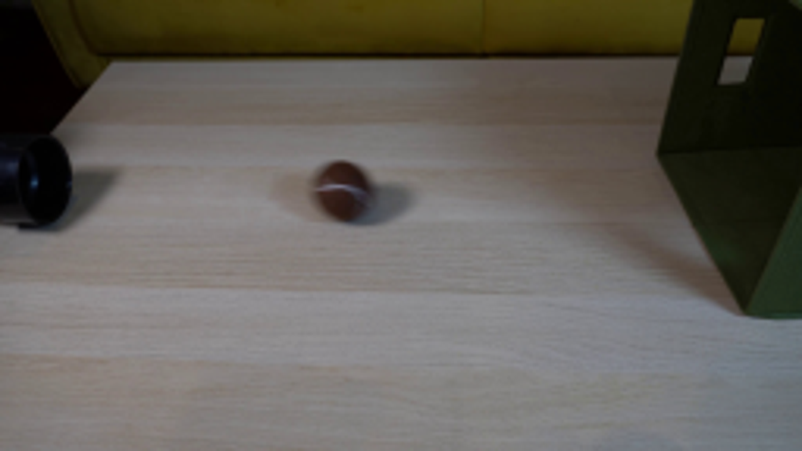
视觉工具实际返回图片 2
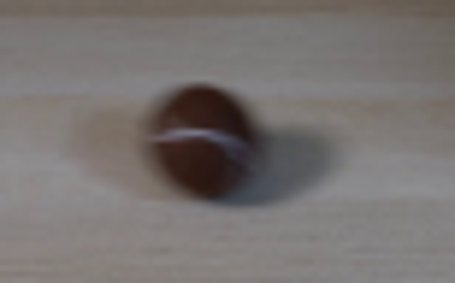
视觉工具实际返回图片 3
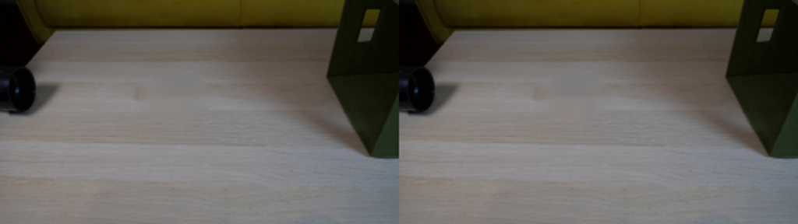
视觉工具实际返回图片 4
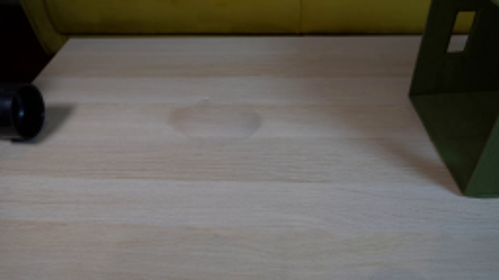
视觉工具实际返回图片 5
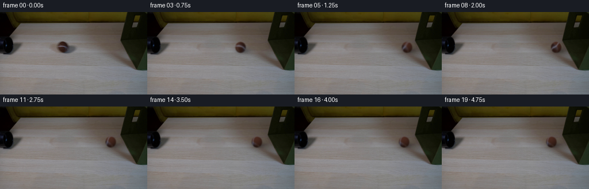
视觉工具实际返回图片 6
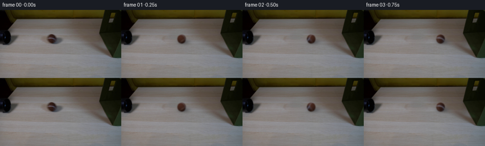
视觉工具实际返回图片 7
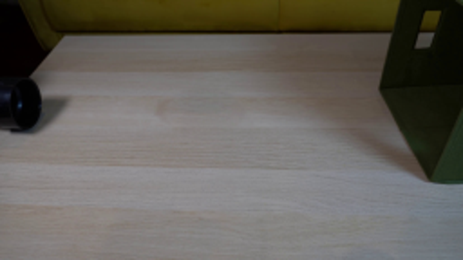
视觉工具实际返回图片 8
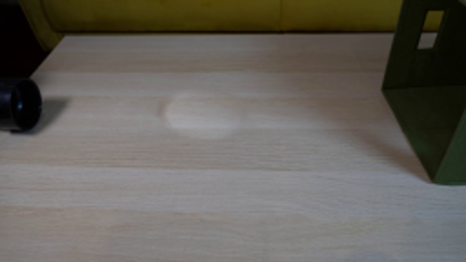
视觉工具实际返回图片 9
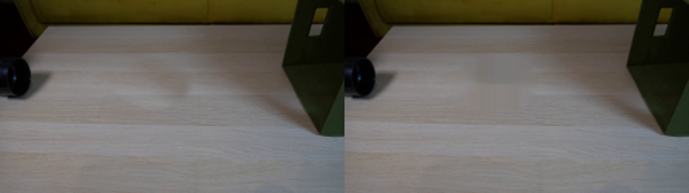
视觉工具实际返回图片 10
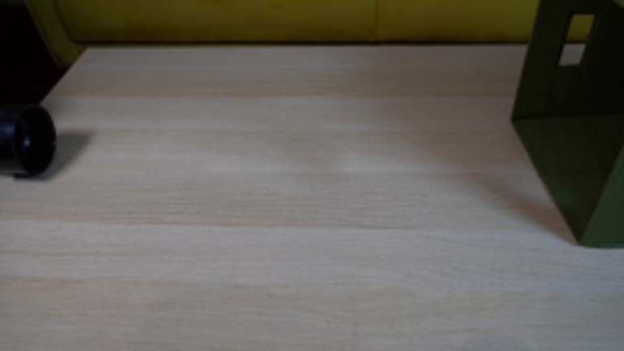
视觉工具实际返回图片 11
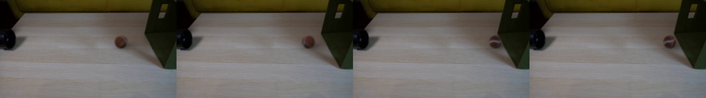
保存候选 2 份；完成命令 11 次；可验证图片返回 11 张。原始 API 响应与完整日志保留在本地。